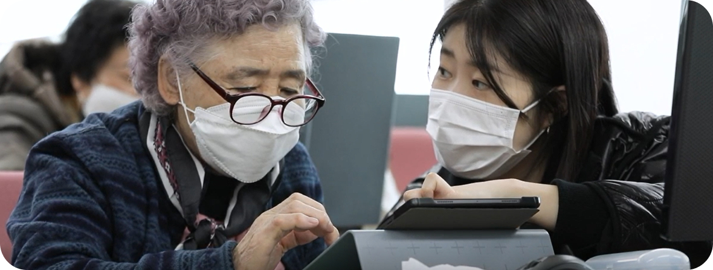

디지털 소외 원인

개인적 요인으로는 스마트폰, 키오스크 등 디지털 기기 사용 경험 부족에서 비롯된 낮은 디지털 문해력, 학습 속도가 느리고 반복 교육이 필요한 특성, 젊은 세대와의 혼합 교육에서 느끼는 위축감 등이 있다. 또한 디지털 기술에 대한 흥미나 필요성에 대한 인식이 낮고, 경제적 제약으로 새로운 기기나 인터넷 요금 부담을 감당하기 어려운 점도 원인이다.
사회적 요인으로는 가족이나 젊은 세대에 의존하지만 소통 속도와 이해력 차이로 도움받기가 쉽지 않다는 점이 있으며, 사회적 고립으로 인해 교육과 지원을 받을 기회가 부족하다. 기술적 요인으로는 앱과 키오스크 등 디지털 기기의 설계가 복잡하고 직관적이지 않아 사용이 어렵고, 기기마다 다른 사용법이나 자주 바뀌는 UI/UX로 인해 학습이 더욱 어려워지는 문제가 있다.
정책적 요인으로는 노인 정보접근권을 명확히 보장하는 법적 근거가 부족하고, 장애인에 비해 노인을 위한 방문교육이나 긴급지원 같은 체계적 제도가 미흡하며, 민간 기업에 디지털 접근성 강화에 대한 강제력이 약하다. 또한 비대면 서비스 확산으로 오프라인 기반의 아날로그 서비스가 줄어드는 점도 노인의 디지털 소외를 심화시키는 요인으로 작용하고 있다.
디지털 소외 사례

노원구에 사는 박씨 (64)
대학병원의 예약 시간을 바꾸느라 ‘챗봇’을 처음 이용해봤다가 곤욕을 치렀다.
“글씨부터 너무 작아 보기 어렵더라고요. 설명이 복잡하니 이해하기도 쉽지 않았습니다. 챗봇이 이런저런 선택을 계속 요구하니 몇번이나 중간에 포기할까 생각했어요. 피곤했어요.”
창원에 사는 김씨 (61)
‘똑똑한’ 밥솥을 산 뒤 난감함을 마주했다. 무슨 이유인지 밥을 안쳤지만 밥이 되지 않았다. 결국 타지에 나가 사는 자녀들을 주말에 불러 도움을 받고서야 그 이유를 알았다.
“애들 보기가 민망하더라고요. 지금도 아이들이 가르쳐준 대로 적어 놓고 잊지 않으려고 하지만 자주 사용하지 않는 기능은 쉽게 또 잊어요.” 조씨는 인공지능 기술이 적용된 밥솥이 애물단지처럼 느껴진다고 한다.

익산에 사는 안씨 (69)
지난여름 태풍이 불던 날 서울행 기차표 시간을 바꾸려 기차역에 다녀왔다. 경로 할인 혜택을 받으며 결제한 표를 앱을 통해 어떻게 교환하는지 알 길이 없었기 때문이다.
“올해 추석에는 이동하는 사람들이 많아서인지 평소에는 구하기 쉽던 버스·기차표도 현장에서는 바로 구하기 힘들었다. 대합실에서 몇 시간을 기다리는데, 나 같은 노인과 외국인들이 많이 보였다”
안산에 사는 정씨 (68)
최종 학력이 ‘초등학교 졸업’인 정씨는 영어로 일일이 로그인해야 하는 게 힘들다고 호소했다. 코로나19 재난지원금 신청도 딸과 택시조합 직원들 도움을 받았다. “스마트폰 때문에 보이스피싱에 노출됐다”고 믿는 정씨는 “인공지능 기술이 발전하면 또 범죄자들은 이 기술을 이용해 나 같은 노인을 노릴 것”이라고 했다.
강동구에 사는 박씨 (66)
박씨는 공과대학을 졸업했다. 그런 덕택인지 박씨에게 보급형 스마트폰은 그다지 끌리지 않는다고 한다. 그렇지만 최신 스마트폰을 제대로 이용한다고도 생각하지 않는다.
“매장에서 추천하는 최신 제품을 사서 쓰고는 있어요. 하지만 쓰기는커녕 이해도 못 하는 기능을 잔뜩 집어넣은 스마트폰보다는 실용적이고 자주 쓰는 기능만 있는 스마트폰이 있으면 좋겠다는 생각을 합니다.”
노인 디지털 소외 해결방안
노인 디지털 소외를 해소하기 위해서는 단순히 디지털 기기 사용법을 교육하는 접근을 넘어서, 노인들이 디지털 기기를 사용하지 않더라도 불편함 없이 일상생활을 영위할 수 있도록 오프라인 서비스를 강화하는 것이 중요하다. 최근 사회 전반에 비대면·무인 서비스가 확산되며 은행, 병원, 식당 등에서 키오스크와 모바일 앱이 주된 서비스 수단으로 자리 잡고 있지만, 이에 적응하기 어려운 노인은 정보와 서비스에서 배제되고 고립감을 느끼는 경우가 많다. 따라서 공공기관과 민간기업은 디지털 방식과 함께 유선 상담, 대면 창구, 우편 안내, 종이 문서 제공 등 아날로그 방식을 병행해 노인이 언제든 선택할 수 있는 다양한 접근 경로를 보장해야 한다.
예를 들어, 주민센터나 복지관, 공공기관 창구에 전담 직원이나 보조 인력을 배치해 직접 서비스를 제공하고, 민간 사업자에게도 유인 창구나 안내 도우미를 두도록 권장하거나 세제 혜택과 같은 인센티브를 제공할 필요가 있다. 또한 노인들이 공공서비스나 생활 필수 정보에 쉽게 접근할 수 있도록 오프라인 안내책자와 전화 상담, 방문 서비스 등을 확대하고, 특히 독거노인이나 거동이 불편한 노인에게는 이동 상담 서비스나 방문 지원을 통해 정보 접근권을 보장해야 한다. 이처럼 노인 친화적인 오프라인 서비스는 단순한 편의 제공을 넘어, 노인의 존엄성과 삶의 질을 지키기 위한 필수적인 사회적 안전망으로 기능해야 한다.